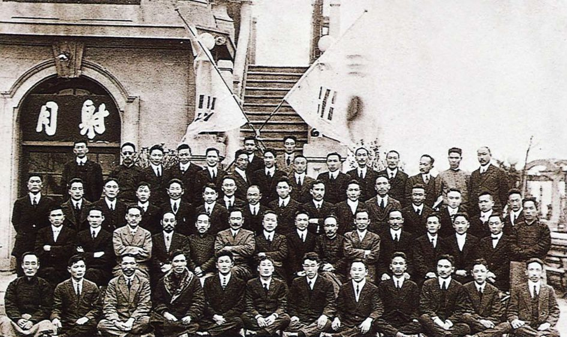

3.1운동
민족대표 33인

3.1 운동 개요
3·1 운동(三一運動) 또는 3·1 만세 운동(三一萬歲運動)은 일제 강점기에 있던 조선인들이 일제의 지배에 항거하여 1919년 3월 1일 한일병합조약의 무효와 한국의 독립을 선언하고 비폭력 만세운동을 시작한 사건이다.
기미년에 일어났다 하여 기미독립운동(己未獨立運動)이라고도 부른다. 제1차 세계대전이 끝나고 파리강화회담에서 미국 대통령 우드로 윌슨이 제안한 민족자결주의가 알려지면서 조선의 독립 운동가들 사이에 희망의 분위기가 일어났다.
대한제국 고종이 독살되었다는 고종 독살설이 소문으로 퍼진 것을 계기로 고종의 인산일(장례일)인 1919년 3월 1일에 맞추어 한반도 전역에서 봉기한 독립운동이다.만주 지린에서 망명한 독립운동가들이 1919년 2월 1일 무오 독립선언을 통하여 조선의 독립을 주장하였고,
조선 재일 유학생을 중심으로한 2·8 독립선언의 영향을 받았다. 만세 운동을 주도한 인물들을 민족대표 33인으로 부른다. 2월 28일경 손병희의 집에 모여 ‘유혈 충돌을 피하기 위해’ 약속 장소인 탑골 공원에 나가지 않기로 결정하였고, 민족대표가 모일 장소는 태화관(泰和館)으로 바뀐다.
태화관에서 독립선언서를 낭독한 민족대표들은 경찰에 자수한다. 한편 오후 2시에 태화관과 300미터 떨어진 원래 약속 장소였던 탑골공원에서는 학생들이 모여들었다. 민족대표 33인이 보이지 않아 한동안 당황하였으나 경신학교 출신 정재용이 팔각정에 올라가 독립선언서를 낭독했다.
거사시간에 기약하지 않고 모인 학생이 천여명이었고 정재용이 독립선언서를 낭독하자 만세소리가 울려퍼졌다. 일본 현벙은 무력을 행사하며 해산시키려 하였으나 군중들은 물러나지 않고 만세 운동을 하다가 6시가 되어 자진 해산하였다.
3.1운동으로 인해 일제의 조선 통치 정책을 친일파 양성을 통해 한민족의 분열을 시도한 문화통치 정책으로 바뀌게 되었다.
대한민국 임시정부
대한민국 임시정부 설립 개요
독립운동가들이 우리 민족의 독립을 향한 열망을 확인하고 표출된 독립 의지를 대표할 조직이 필요하다는 인식이 확산됨에 따라 대한민국 임시정부를 설립하게 되었다.
1919년 4월 11일 의정원 회의에서 국호를 대한민국으로 정하고 민주공화제를 골간으로 한 대한민국 임시 헌장을 채택한 뒤 선거를 통해 국무원을 구성한 뒤에 정부 수립을 선포하였다. 이에 앞서 1919년 3월 17일 러시아 연해주에서 대한국민의회 임시 정부가 수립되었고,
4월 23일 경성(서울)에서 한성 임시 정부가 수립되었다. 상해에서 출범한 대한민국 임시정부와 통합해야 한다는 주장이 나왔다. 그로인해 1919년 9월 11일 상해에서 설립한 대한민국 임시정부로 통합되었다.